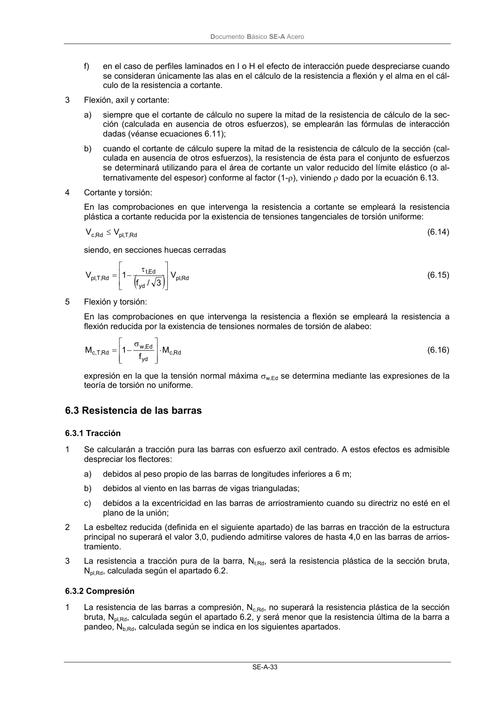

DB-SE-A Acero · edición 2007-10-23 · capa oficial
Documento DB-SE-A-oficial · SHA-256 del PDF 9ed9ea694aabfbda3bfbbef40dfe9223fde05d13c35bc2ba9751e5a96a22a64f
Página física 35 de 168.
Copia fiel del PDF fuente · Fuente oficial
Ficha de la disposición en la fuente oficial
Formato: Texto de la página (Markdown)
Documento Básico SE-A Acero SE-A-33 f) en el caso de perfiles laminados en I o H el efecto de interacción puede despreciarse cuando se consideran únicamente las alas en el cálculo de la resistencia a flexión y el alma en el cál- culo de la resistencia a cortante. 3 Flexión, axil y cortante: a) siempre que el cortante de cálculo no supere la mitad de la resistencia de cálculo de la sec- ción (calculada en ausencia de otros esfuerzos), se emplearán las fórmulas de interacción dadas (véanse ecuaciones 6.11); b) cuando el cortante de cálculo supere la mitad de la resistencia de cálculo de la sección (cal- culada en ausencia de otros esfuerzos), la resistencia de ésta para el conjunto de esfuerzos se determinará utilizando para el área de cortante un valor reducido del límite elástico (o al- ternativamente del espesor) conforme al factor (1-ρ), viniendo ρ dado por la ecuación 6.13. 4 Cortante y torsión: En las comprobaciones en que intervenga la resistencia a cortante se empleará la resistencia plástica a cortante reducida por la existencia de tensiones tangenciales de torsión uniforme: Rd , T , pl Rd ,c V V ≤ (6.14) siendo, en secciones huecas cerradas ( ) Rd , pl yd Ed ,t Rd , T , pl V 3 / f 1 V τ − = (6.15) 5 Flexión y torsión: En las comprobaciones en que intervenga la resistencia a flexión se empleará la resistencia a flexión reducida por la existencia de tensiones normales de torsión de alabeo: Rd ,c yd Ed , w Rd , T ,c M f 1 M ⋅ σ − = (6.16) expresión en la que la tensión normal máxima σw,Ed se determina mediante las expresiones de la teoría de torsión no uniforme. 6.3 Resistencia de las barras 6.3.1 Tracción 1 Se calcularán a tracción pura las barras con esfuerzo axil centrado. A estos efectos es admisible despreciar los flectores: a) debidos al peso propio de las barras de longitudes inferiores a 6 m; b) debidos al viento en las barras de vigas trianguladas; c) debidos a la excentricidad en las barras de arriostramiento cuando su directriz no esté en el plano de la unión; 2 La esbeltez reducida (definida en el siguiente apartado) de las barras en tracción de la estructura principal no superará el valor 3,0, pudiendo admitirse valores de hasta 4,0 en las barras de arrios- tramiento. 3 La resistencia a tracción pura de la barra, Nt,Rd, será la resistencia plástica de la sección bruta, Npl,Rd, calculada según el apartado 6.2. 6.3.2 Compresión 1 La resistencia de las barras a compresión, Nc,Rd, no superará la resistencia plástica de la sección bruta, Npl,Rd, calculada según el apartado 6.2, y será menor que la resistencia última de la barra a pandeo, Nb,Rd, calculada según se indica en los siguientes apartados.
